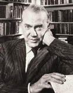

(1904 – 1991)

Tropik ülkelere yaptığı egzotik yolculuklar, savaş sırasında ülkesi adına casusluk yapması, gazetecilik ve yazarlık... Graham Green'in zaten "roman gibi" bir hayatı olmuştu, ona kalan sadece yazmaktı ve o da üstüne düşeni hakkıyla yaptı. Romanlarının çoğunun sinemaya uyarlanması da renkli hayatının bir yansıması oldu.
Edebi metinlerine Katolikliği konu almakla ve psikolojik açıdan iddialı casusluk romanlarıyla ünlenen Graham Greene (okunuşu: Grehem Griğn), 2 Ekim 1904'te Hertfordshire yakınlarındaki Berkhamsted'da dünyaya geldi. Ünlü yazar Robert Louis Stevenson'ın yeğeni olan Greene, müdürlüğünü babasının yaptığı Balliol College'a devam etti. Babasının müdür olması okula gelen diğer öğrencilerle arasında sorunlar yarattı ve Greene, çocukluk dönemini yalnızlık içinde geçirdi. Oxford'da tarih okuyan münzevi genç, yalnızlığından kurtulmak için edebiyata yöneldi. 1925 yılında ilk şiirlerini yayımladı. Bir yıl sonra, sempati duyduğu Komünist Parti'yle ilişkiye geçti; ancak bu kısa sürdü. 1926'da Londra'da yayımlanan Times gazetesinde çalışmaya başlayan yazar, bir yıl sonra Vivien Dayrell-Browning ile evlenerek iki çocuk babası oldu.
İçimdeki Adam adlı eseriyle dikkatleri çektikten sonra 1932'de yayınladığı Doğu Ekspresi'yle belli bir başarıyı yakalamış oldu. Bu izleyen yıllarda çok sayıda deneme ve şiir yazdı. 1935'te Liberya'ya gitti ve buradaki deneyimlerini Haritasız Yolculuklar kitabında anlattı. Spectator adlı sinema dergisinin kurucuları arasında yer aldı ve film eleştirmeni olarak isim yaptı. 1940 yılında yazdığı ve konu olarak Brighton Kayası'yla ilişkili olan Güç ve Şan adlı romanı, Graham Greene'in başyapıtı sayılmaktadır.
1940'lı yıllarda Dışişleri Bakanlığı'nın gizli ajanı olarak Afrika'da görevlendirilen Greene II. Dünya Savaşı sona erdikten üç yıl sonra yeniden din motifli bir roman olan Yıkılış'ı yazdı. Ardından Korku Bakanlığı geldi. Bu romanda Katolik inancını toplumun dışına itilmiş birine karşı acıma hisleriyle birleştiren yazar, binbaşı rütbesindeki bir polisin başka bir kadına âşık olmasına rağmen karısını terk etmeyişini anlatır.
1946'dan sonra değişik uluslararası yayınevlerini yöneten Greene, merkezine inancı alan ürünler vermesine rağmen 'Katolik yazar' olarak anılmak istemedi. Bu nedenle, eğlenceli yazılar yazmadaki yeteneğini sergilemekte gecikmedi. Ünlü yönetmen Carol Reed'in yönettiği Üçüncü Adam adlı filmin önce senaryosunu yazdı, sonra bu senaryoyu roman haline getirdi. Romanda bir yazar, işgal altındaki Viyana'da öldüğü iddia edilen ama aslında sağ olup penisilin kaçakçılığı yapan arkadaşını anlatıyordu.
1950'li yıllarını gazetecilik yaparak geçiren yazar, Sunday Times gazetesinde yayımlanmak üzere Kenya'daki Mau-Mau hareketini anlatan bir makale kaleme aldı. Sessiz Bir Afrikalı adını taşıyan kitabında, Amerika'nın dünya gücü olma hevesini ve materyalizmi eleştirdi. Üç yıl sonra da Havana'daki Adamımız adlı casusluk romanını yazdı. Kendisinin de bir dönem casus olarak görev yapmasından kaynaklanan bilgisi sayesinde üst üste casusluk romanları yayınladı. Bu romanlardan Tükenmiş Bir Konu, bugünkü adı Zaire olan Belçika Kongosu'ndaki siyasal gelişmelerin fon olarak kullanılmasıyla ünlenirken Komedyenler'de Haiti diktatörlüğü teşhir edilir. Greene'in yaşlılık dönemi eserlerinde komedi öğesinin ağırlık kazandığı görünmektedir. Teyzemle Yaptığım Yolculuklar buna örnek gösterilebilir. Romanlarının yanı sıra seyahatnamelere, çocuk kitaplarına ve drama da yönelen yazar Fahri Konsolos adlı çalışmasında Paraguay'ın politik-dini durumunu bu ülkede görev yapan konsolos, konsolosun karısı ve bir doktor arasındaki ilişki üçgeninden yararlanarak dile getirir. Yazarın son romanı İnsan Faktörü, İngiliz Gizli Servisi için çalışırken aynı zamanda KGB'ye hizmet veren ve arkadaşının ölümünden sorumlu tutulan bir ajanın Moskova'ya kaçarak burada yaşamasını konu alır.
Hayat arkadaşı Yvonne Cloutea ile Paris'te ve Antibes'te yaşayan Graham Greene, 70'li yılların sonundan itibaren politik çalışmalara ağırlık verdi. Nikaragua'da Sandinistlerin tarafını tuttu; Gorbaçov'un Sovyetler Birliği'nde yaptığı reformları destekledi. İyilikle kötülük arasında gidip gelen, iç dünyaları yıkılmış, toplum tarafından dışlanmış, yapayalnız insanları konu alan eserleriyle dünya edebiyatçıları arasına katılan Graham Greene, 3 Nisan 1991'de İsviçre, Vevey'de hayata gözlerini yumdu.
Seçme Romanları: İstanbul Treni (1932 – Everest Yayınları, 2004), Brighton Kayası (1938), Meselenin Kalbi (1941 – İletişim Yayınları, 2011), Korku Bakanlığı (1943), Üçüncü Adam (1950), Sessiz Amerikalı (1955 – Everest Yayınları, 2003), Havana'daki Adamımız (1958), Tükenmiş Bir Konu (1961), Komedyenler (1966), Bir Tür Yaşam (1971), İnsan Faktörü (1978), Kaçış Yolları (1980)